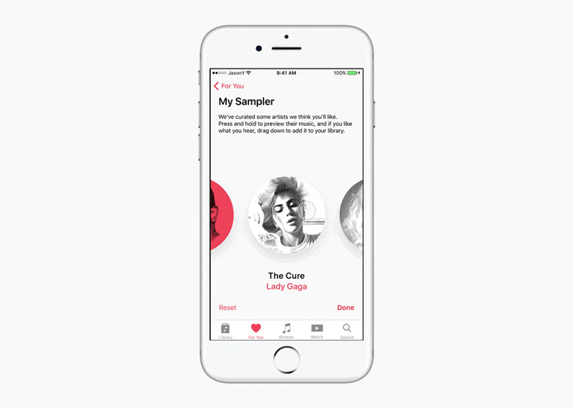
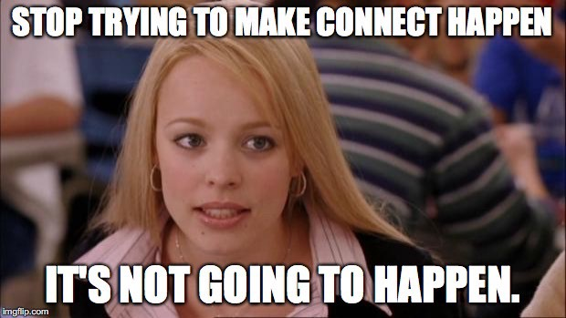

【翻译Medium之二】我被Apple Music 拒绝了，所以我重新设计了它
原作：Jason Yuan
翻译：张瑞
原文地址：科学上网
我想要在这个案例开始前声明，我重新设计Apple Music的动力完全不是出于怨恨或者愤慨。
今年早些时候，我申请并面试了Apple Music的平面设计实习岗位（一生一次的机会），之后就收到了一封非常委婉的拒信说尽管他们喜欢我的作品，但是他们想看到我更多的成长和训练。
一开始，我很沮丧——西北大学不提供任何的本科生平面设计的项目，所以无论他们期望的是怎样的成长，我都必须靠自学……
但是很快我有了这个想法，我开始受到鼓舞，踏上了三个月之久的旅程，只为了一个坚定的目标——设计Apple Music应当成为的IOS端APP。
对我来说，这是一个让我深入研究交互和设计的机会，是一个让我花费大量时间在sketch和principle上的借口，是一个让我用我粗略的线框图打扰周围人的理由😂……
你将会在下面阅读到一个Apple Music存在问题的潜在解决方案的案例研究，同时还有关于它未来发展的想法。我的过程基于定性用户研究、苹果的官方设计准则以及我自己的设计师直觉。
介绍
作为一个有音乐创造和表演背景的设计师，我总是对于将音乐与技术相结合的体验充满激情。通过设计，我希望能让音乐的体验更容易获得和享受。
但是，Apple Music总是让我感到困惑。
为了更好地理解Apple Music，我回溯记忆并且重新研究了它最初的版本。Apple Music的第一版是很多人头痛的根源，因为它众所周知的令人困惑的界面和半成熟的视觉设计。

到了IOS10，Apple基于简化的原则。发行了一次非常重要的升级。

虽然新的界面更容易导航了，我仍然感觉有提升的空间。尽管它简化了色板和放大了文字及排版，但是它的界面仍然错乱不堪，甚至让人产生幽闭恐惧——离Apple一贯的优雅设计相距甚远。
在指导从始至终的调查时，我依据三个原则推进我的重设计。
- 核心体验
- 品牌辨识度
- 界面视觉
1.核心体验：音乐发现
我一开始就发现，使用流服务的用户通常会落在下面的范围中：

收藏者Hoarders：
- 拥有一个他们经常会添加的庞大资料库
- 对于他们听的音乐更加敏感
随性者Nomads：
- 依赖歌单或者推荐内容
- 可能已经正在使用spotify
Apple Music偏向在这个范围的收藏者一边。打开一个Apple Music的歌单，你会在描述中发现下面的文字：
如果你听到了喜欢的东西，就把它加到你的资料库里。
鉴于Apple music的前身就是iTunes，把歌单作为发现新音乐的工具是一种有意义的方法。但是，现在歌单被使用的方式让人感觉非常的复杂。我发现用户对于把整个歌单添加到他们的资料库里这种方式非常不适应，尤其是被告知歌单会持续更新的时候。
如果Apple Music想要将用户延伸到范围的随性者一边，他们必须要同时保留现有用户的基础。这意味着要创建一种以艺术家和专辑为中心的音乐发现来取代歌单。那就是……My Sampler
My Sampler
My Sampler是一种新的体验，可以用来在收藏者和随性者之间取消芥蒂，来取代现在的“音乐新发现”。它的产生出于这样的理解：如果用户对于加进资料库的音乐非常挑剔，那么对于听完全部都是陌生音乐的歌单也会非常不情愿。一种更好的体验会是收藏的片段——或者叫Sampler——可以给用户足够的信息来决定是否要将它加入他们的资料库或者每周歌单里。
一进入样本资料库，用户会看到一个和收藏的歌曲对应的歌手的头像列表。用户可以点击并按住来试听每首歌的15秒，之后便可以向上滑动来拒绝这首歌或者向下滑动将这首歌加入到他们的音乐资料库里。
我选择使用手势交互以便于用户可以在不看屏幕的情况下使用Sampler。一旦用户完成了这个过程，他们的选择会被用来创建一个用户可以聆听的新的“音乐新发现”。

这个经验背后的来历是在一次采访中获得的引用：
“苹果低估了游戏化的力量。”
——我在LA采访的一位Apple Music的用户兼UX设计师
我这样理解，通过一个游戏化的体验，用户可以和他们发现的音乐立即建立联系。
除此之外，Sampler还可以提供给Apple Music有关用户偏好的数据，可以让APP和用户一起进化和成长。
2.品牌辨识度
我在索尼音乐实习的期间，我学习到在流服务中，一个品牌的视觉设计必须同时是可以辨别却又隐形的。Spotify这方面做得很好，尤其体现在他们对于歌单封面艺术的铜版摄影和“爆裂”效果上。

相比较而言，Apple Music现在的品牌视觉有点滥用了：

有字母混合、3D排版和黑白摄影。
除此之外，还有这种拼贴画主题的封面，它们实际上没有传递任何有关这个歌单的情绪/感觉。

主要的问题似乎是Apple Music放了太多的东西来展示，以便于让他们观察哪些在起作用，而不是真的在建立一个统一的视觉语言可以让苹果在海量的专辑封面中跳脱出来。
我的解决方案建立在下面的原则之上：
专辑封面应该被当做UI的一部分来对待，而不是一个独立的视觉部分。
瞩目艺人歌单：
从Apple Music的欢迎页面获得灵感，我选择了圆形的样式来展示歌手的头像。这个圆形从iPod的经典滚轮式圆盘获得灵感——苹果音乐留给人们的经典印象之一。“圆形中的头像”的样式也是被iOS其他部分所使用的，尤其是联系人里。
此外，我选择了San Francisco的字体来让瞩目艺人歌单的封面设计可以和UI协调一致。最后，我用蓝色、紫罗兰色和红色等呼应Apple Music的图标的颜色来代表不同的曲风同时规范了色板。

精选歌单：
对于精选歌单，我想要通过颜色的使用来使得在展示歌单的心情/氛围的同时保持和瞩目艺人歌单的一致性。通过高斯模糊和歌手同样的照片作为背景来展示更明亮的图像（从iOS 的背景模糊获得灵感），我还增加了Apple Music的标志性的轻微红色渐变来增加面积感。

核心歌单：
最后，我通过使用瞩目艺人歌单和精选歌单中使用的同样的样式升级了核心歌单的一些中心图案。

我认为这种新的品牌规范和UI的其余部分完美结合，并且我也很好奇这种圆形的主题是否可以通过用户的使用来获得生机……
3.界面视觉
总体提升
我听到的对于现有的界面最多的抱怨就是它太平淡了，缺乏令人愉悦的元素。为了解决这个问题，我通过轻微的间距调整优化留白，如下图：

资料库
我认为对于资料库部分没必要进行重大改造，所以我仅仅改变了标准的留白和字体大小的调整。我取消了已下载的音乐作为默认菜单，因为我认为应用应该根据用户是流量还是无线来自动调整用户可以获得的音乐。
下面是一些我增加的微小的动态细节（在所有标签下都一样），来减少APP的无聊感。

为你推荐
“为你推荐”是Apple Music的核心部分。它是Apple Music通过基于用户“喜爱”的歌单和专辑来推荐相应的歌单和专辑，以此来表现他们有多了解用户的地方。
我收到了大量反馈告诉我他们觉得现在的“为你推荐”是多么随机，所以我的重设计里我决定减少投射在用户部分的内容同时增加剩下部分的相关性——就像Facebook和Instagram的“top posts”。
重设计的“为你推荐”以My Sampler作为开始来取代现有的“最爱精选”和“音乐新发现”。“最近播放”被完整保留，因为用户发现它相当实用。

向下滑动，你会发现我把“一周当日歌单”变成了一个特定心情，它会基于地点、时间和最近的社交媒体活动来改变。
如果你刚刚通过Facebook进入咖啡馆，Apple Music就将心情部分升级为专注/学习歌单，这不是会很棒吗？

如果我们无论如何都会通过社交媒体分享我们的生活，那么也应该从这里获得一些回馈，你说呢？
在这下面是每日推荐，这是一个基于用户偏好可以推荐给用户定制的视频内容的例子。例如。我非常喜欢水果姐果子狸，如果水果姐的Carpool Karaoke（拼车卡拉秀，美国的一档夜间秀节目）发行了，这个行为召唤（Call-To-Action）就会着重突出水果姐的节目。

之后，你会看到经典的瞩目艺人，在这里我保留了它来显示新的品牌视觉是如何和UI的其他部分保持协调的。

最后，用户会获得最爱的/最经常放的曲风的预览，以便于如果他们在为你推荐里没有发现感兴趣的内容的话，可以快速获得更多音乐。

但是connect帖子呢？
好问题。事实上，我从我的调查中没有收到任何表明要在应用中保留connect服务的数据。用户对于通过音乐和家人朋友保持联系更有兴趣（就像Spotify），而不是通过一个山寨推特和艺术家联系。
我认为苹果应该将注意力放在积累已有的社交媒体上，而不是强加另一个在它已经负载过重的用户身上。

浏览
我收到的对于现有的浏览屏的主要反馈是它太平淡太不吸引人了。还有一些用户对于“为你推荐”和“浏览”的不同感到疑惑。
我的解决方案是以苹果官网的样式重设计介绍滑动——填充视图宽度的巨大滑边，用一个水平指示条告知用户现在的位置。我相信这个变化会让介绍内容感到更吸引人来减少侵入感/随机感。

我还把收音机菜单合并进已有的浏览菜单里。

视频
今年早些时候，苹果正式宣布Apple Music将会扩展视频流的服务以希望将Apple Music转型成一个以流行文化为中心的应用。我很好奇这应该怎样实现，尤其是在手机应用的上下文中。所以我为视频专门创建了单独的标签来展示独家视频内容和音乐录像带。

最后应该有足够的内容来平衡一个专用的标签，但是现在我仅仅通过泄露出来的信息和苹果已有的视觉语言来进行我的设计决策。
搜索
现在Apple Music处理搜索的主要问题是它的使用建立在一个模式之上：你可以在Apple Music里或者你的资料库里搜索——但是不能同时。

即使是使用了两年，我仍然发现我会因为在错误的模式之下而感到愤怒——尤其是资料库处理键盘输入的方式是不同的：

这非常容易令人生气因为会有很高的输入错误的潜在风险，尤其是如果用户正在搜索一个不在他们资料库里的新歌或者歌手的时候。
我的解决方案是将这两个模式合并成一个总的“搜索”来展示结果，用户的资料库优先，后面是Apple Music里可以获得的信息。

对于模糊输入的支持应该延伸到用户的资料库里的内容。在未来，有关心情或活动的输入结果是否可以实现也非常有趣。
正在播放
我喜欢现在苹果设计的正在播放屏，并且我想不出任何必要的调整。我决定保持它现有的大部分视觉界面。但是，我想出一个在现有的体验之上增加的好方法，就是增加一些简单的手势交互。
对于很多用户来说，包括我自己，通过“喜爱”和“不喜爱”的操作来“训练”Apple Music的必要性是不清晰的。这可以被部分归结于这个操作是被隐藏的。“喜爱”一首歌的过程在手机上需要用户打开一个单独的菜单——这是一个被轻视影响的无聊过程。

我的解决方案是使用一个大部分用户已经非常熟悉的手势——双击——优化现有的正在播放的体验。我注意到很多用户会试着按下“浮动的”正在播放的专辑封面（它看起来如此自然……），为什么不加一个反馈呢？
此外，我增加了相邻歌曲的滑动预览，以便于用户可以通过水平滑动来跳过一些歌曲。我认为这会以一个更直接的方式增加用户对于他们聆听体验的控制感。
接下来呢？
回顾我在我最初的头脑风暴阶段我在我的笔记本上的初稿，我惊讶地发现我在三个月里能够取得这么多进展。
开始整个过程之前，我没有Principle的工作经历并且几乎很少在Sketch里进行混合编辑。现在……诚实的说，我仍然认为我在上述应用里是个新手，但是，我能够做出一些改变了——并且是我能想到的最好的了。
我并没有期望Apple Music的人们可以从这个案例里获得任何东西。事实上，如果正在Apple Music工作的人因为这篇文章被绊了一跤我可能会感到心碎……但是如果你没有，我希望我的工作能够给你一些想法、启发你一些交流！
通过这个项目，我理解了我的舞台剧背景和UX设计的关系了——体验设计师和舞台艺术家在他们对于人类情感的理解是类似的。每一个看过我简历的人，记住它吧！
不久，我就会开始我的下一个大冒险——罗德岛州设计学校的平面设计学士。尽管和这个过程（包括和西北大学）说再见很奇怪，我真诚的希望这只是我体验设计事业的开端——一个通过同感改变世界的事业。